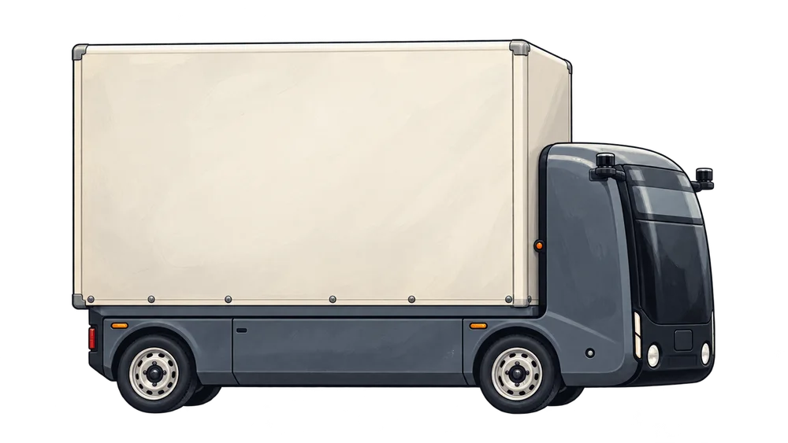
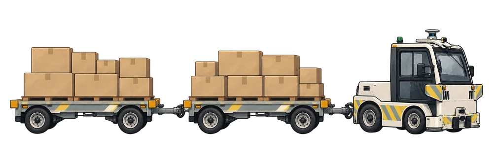
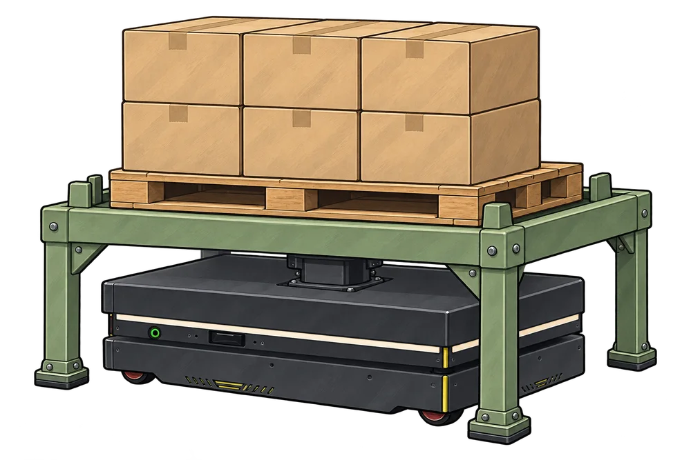

Фуры поставщиков
Два рисованных образа: красная современная и синяя с классической кабиной. Это внешняя доставка, а не автономные машины завода.
Производитель КАМАЗ ↗Новая 3D-проба: разгрузка фуры · 18 секунд →
ДЕЙСТВУЮЩИЙ ЗАВОД · УЛИЦА · ЦЕХ
2 минуты 16 секунд: приезд фур, приёмка, склад и доставка в цех. Выберите способ передачи груза.
Фуры поставщиков приезжают в зону приёмки у въезда.
Скачать видео MP4 ↓Внутренняя техника нарисована по фотографиям из аналитической записки v02. Фуры поставщиков — собирательные образы российских КАМАЗов, с современной и более старой кабиной. Это стилизованные образы, а не точные модели. План и операции условные; погрузка и передача показаны монтажом. Прямая перегрузка требует синхронизации машин и завершённой проверки. Погрузчики и операторы сохраняют возможность ручной работы.
Два рисованных образа: красная современная и синяя с классической кабиной. Это внешняя доставка, а не автономные машины завода.
Производитель КАМАЗ ↗
Образ Evocargo: закрытый кузов и компактная кабина. Для поездок между зданиями.
Фотография и кейс ↗
Образ EZTow на BMW. Доставка нескольких грузовых мест за рейс.
Фотография и кейс ↗
Образ Ronavi H1500 под транспортировочным столиком. На улице он не показан.
Карточка оборудования ↗Тот же сюжет в MP4 — для стандартного проигрывателя и пересылки.